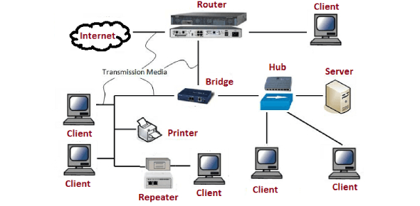

Jaringan Komputer Jaringan Komputer Jaringan Komputer Jaringan Komputer Jaringan Komputer Jaringan Komputer

Materi Pembelajaran
Untuk rangkuman jaringan komputer kalian bisa klik link di bawah ini ya!
Rangkuman Jaringan Komputer
untuk penjelasan lebih lengkapnya kalian bisa klik sumber di bawah ini ya!
Sumber
Kembali ke menu